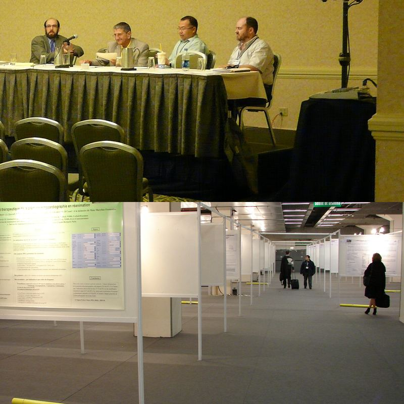

Conference Radar
Academic conferences & deadlines
Your field, your specialty, every day.
Conférences scientifiques et dates limites
المؤتمرات العلمية وآجال الإرسال
Your specialty
New conferences, official links
Next 18 months
By field & country
Reminders
D-7 · D-1
Free, no sign-up
Open sources
Pro alerts
Photos Wikimedia Commons : Piotrus CC BY-SA 3.0 · Copyleft CC BY 3.0